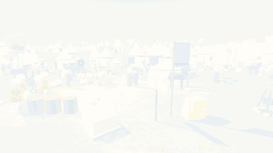

Tolga Fatih'e risk tablosu sunuyor, Urban'ın topunu yanlışlıkla havaya uçuruyor, Bizans'ta yedi nüsha form dolduruyor ve pazartesi 09:00 toplantısına yetişmeye çalışıyor.
Tolga pitches a risk matrix to Sultan Mehmed, accidentally blows up Urban's giant cannon, fills out forms in seven copies in Byzantium, and still tries to make his Monday 9 a.m. meeting.
farklı final
different endings
Her seçim tarihi değiştirir. Aynı İstanbul'u iki kez fethedemezsin.
Every choice bends history. You'll never conquer the same Constantinople twice.
bölüm
chapters
Garajdan otağa, sur dibinden Zaman Bürosu'nun sonsuz koridorlarına.
From a garage workshop to the Sultan's tent, the city walls and the endless corridors of the Time Bureau.
tamamen seslendirilmiş
fully voiced
Her replik Türkçe ve İngilizce seslendirildi. Hikmet Amca'nın telsizi dahil.
Every line is voiced in both English and Turkish. Uncle Hikmet's crackly walkie-talkie included.
tarihi doğruluk
historical accuracy
Ayasofya, Galata, surlar ve kızak yolu gerçeğine sadık. Tavuklar değil.
Hagia Sophia, Galata, the land walls and the famous overland ship slipway are faithful. The chickens are not.
FragmanTrailer

Urban'ın topu. Biraz fazla barut.Urban's cannon. Slightly too much powder.
Fatih:Mehmed: …Urban.
Urban: (Gülle yığınının içinden) Efendim.(From inside the pile of cannonballs) My Sultan.
Fatih:Mehmed: Sigorta… Urban'ın topunu sigortalamış mıydın?Insurance… Had you insured Urban's cannon?
Tolga: Hayır.No.
Fatih:Mehmed: Yazık.A pity.
Sultan kıpırdamadı bile. Yüzünde tek bir is lekesi.The Sultan didn't even flinch. One soot mark on his face.
Oyundan karelerScreenshots
Görüntüler Türkçe arayüzle alındı; oyunun tamamı İngilizce de oynanabilir.Screenshots show the Turkish interface; the whole game is also fully playable in English.
BölümlerChaptersBazı bölümler yalnızca belli seçimlerden sonra açılır.Some chapters only open up after certain choices.
← kaydır →← scroll →
Her bölümün sonunda bir akış şemasıA flowchart after every chapter
Neyi seçtin, neyi kaçırdın, hangi yollar hâlâ kilitli: hepsi Zaman Bürosu'nun resmî şemasında. Bölümü baştan oynayıp başka bir kapıyı açabilirsin.
What you chose, what you missed, which paths are still locked: it's all on the Time Bureau's official chart, stamped in triplicate. Replay any chapter and open another door.
Tolga'nın çantasındaki beş eşya (leblebi, koli bandı, telefon…) her sahnede başka bir işe yarar. Ya da yaramaz.
The five items in Tolga's bag (roasted chickpeas, duct tape, a phone…) do something different in every scene. Or absolutely nothing.

KurulumInstallingİmzasız bağımsız oyun olduğu için sistem bir kez uyarabilir. Normaldir.It's an unsigned indie game, so your system may warn you once. That's normal.
🪟 Windows
Setup dosyasını indir ve çalıştır. Yönetici izni gerekmez. “Bilgisayarınızı korudu” çıkarsa: Ek bilgi → Yine de çalıştır.
Download and run the Setup file. No admin rights needed. If you see “Windows protected your PC”: More info → Run anyway.
🍎 macOS
Zip'i aç, uygulamaya sağ tıkla → Aç. Intel ve Apple Silicon'da çalışır.
Unzip, then right-click the app → Open. Runs on Intel and Apple Silicon.
🐧 Linux / Steam Deck
Zip'i aç ve GercekTarihBuDegil dosyasını çalıştır. Steam Deck'te “Steam dışı oyun ekle” ile kütüphaneye ekleyebilirsin.
Unzip and run GercekTarihBuDegil. On Steam Deck, use “Add a Non-Steam Game” to put it in your library.
Dil ve seslendirme oyun içinden, Ayarlar menüsünden değiştirilir.Switch language and voice-over any time from the in-game Settings menu.
📺 Yayıncılar ve içerik üreticileriStreamers & creators
Oyunu yayında ve videolarında dilediğin gibi kullanabilir, gelir elde edebilirsin. İzin almana gerek yok. 23 finalin hepsini bulan var mı, merak ediyoruz.
Stream it, make videos, monetize them: no permission needed. We're curious whether anyone finds all 23 endings.
Pazartesi 09:00 toplantısı bekliyor.The Monday 9 a.m. meeting is waiting.
Ücretsiz İndirDownload Free